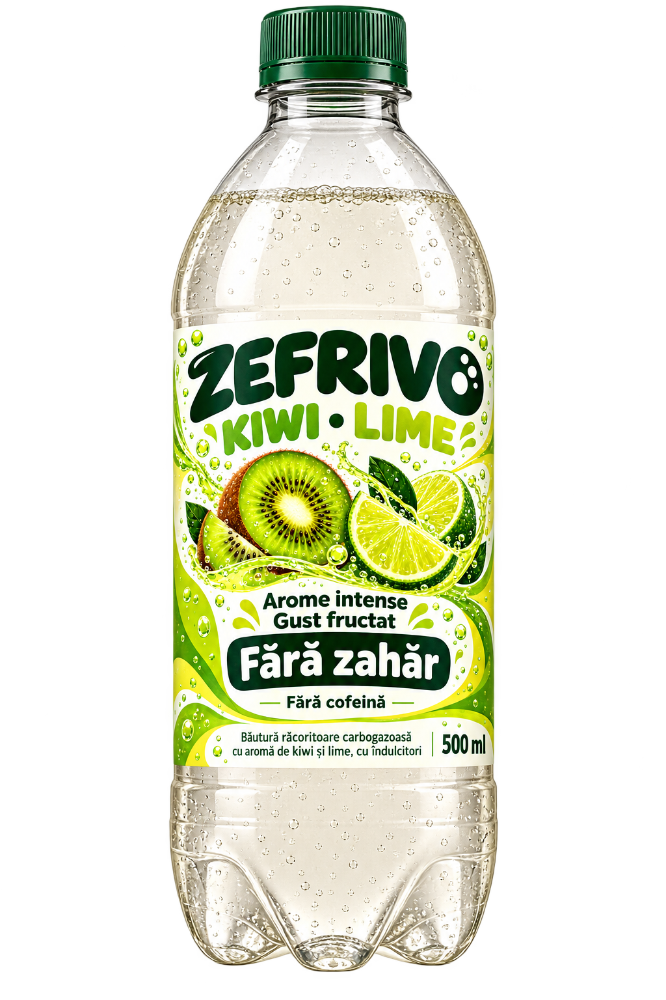

UN UNIVERS DE GUST
Arome intense.
Gust fructat.
FĂRĂ ZAHĂR
Trei arome cu personalitate.
Bule, culoare și gustul tău preferat.
Fără cofeină.
VERDE. VIVACE. FRUCTAT.
Kiwi–Lime
Gustul fructat de kiwi întâlnește nota citrică de lime. O combinație jucăușă, cu bule și multă personalitate.
BĂUTURĂ RĂCORITOARE
CARBOGAZOASĂ500 ml · 2000ml/2L
CARBOGAZOASĂ500 ml · 2000ml/2L
Schimbă aroma cu săgețile
Arome intense✳Gust fructat✳Fără zahăr✳Fără cofeină
ASTA E ZEFRIVO
Tot gustul.
În felul tău.
O băutură răcoritoare care pune aroma în centrul fiecărui moment.
01
Arome cu personalitate
De la combinația Kiwi–Lime la notele de citrice și gustul tropical de mango. Trei interpretări ale plăcerii de a te răcori.
02
Bule pentru momentul tău
O pauză, o masă cu prietenii sau o zi care cere puțină culoare. Descoperă aroma care te inspiră.
03
Fără zahăr. Fără cofeină.
Zefrivo îmbină îndulcitori non-calorici cu arome de fructe într-o băutură carbogazoasă.
GUSTUL ARE LOC ÎN ZIUA TA
Două formate.
Aceeași personalitate.
Pentru momente mici
și întâlniri mari.
PENTRU MOMENTUL TĂU
500ml
Formatul de luat cu tine,
oriunde te duce ziua.
PENTRU MOMENTE ÎMPREUNĂ
2000ml/2L
Gustul de împărțit la masă,
cu oamenii tăi preferați.
POVESTEA NOASTRĂ
O idee simplă.
Un gust cu Personalitate.
Zefrivo a pornit de la dorința de a crea o băutură cu arome intense de fructe, fără zahăr și fără cofeină.
Am construit în jurul acestei idei o identitate vizuală plină de culoare și trei sortimente: Kiwi–Lime, Citrus și Mango Zero.
BINE DE ȘTIUT
Curiozități?
Avem răspunsuri.
Câteva lucruri despre
universul Zefrivo.
Ce arome are Zefrivo?
Gama include Kiwi–Lime, Citrus și Mango Zero. Le poți explora în caruselul de mai sus.
Zefrivo este o băutură energizantă?
Zefrivo este o băutură răcoritoare carbogazoasă cu aromă de fructe, fără cofeină.
Cu ce este îndulcită băutura?
Zefrivo folosește îndulcitori non-calorici pentru gustul dulce, fără zahăr.
Ce formate are gama Zefrivo?
Gama cuprinde sticle PET de 500 ml și 2000ml/2L, pentru fiecare dintre cele trei arome.
Ce culoare are
gustul tău?